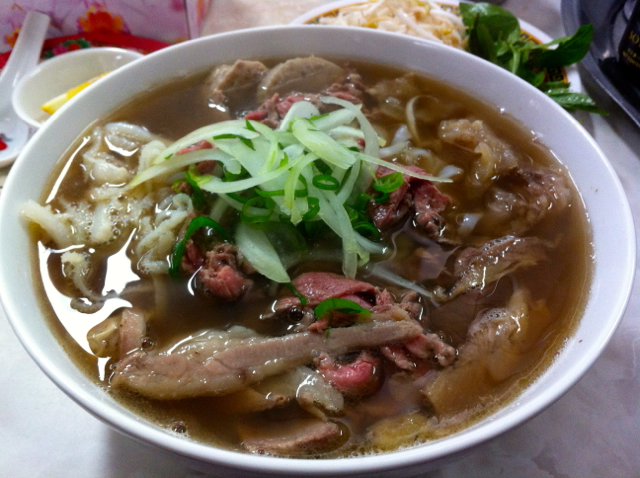

Pho

Description
Vietnamese pho is all about the broth! In this authentic recipe, beef bones, fish sauce, star anise, and ginger simmer for at least 6 hours, creating a complex, aromatic broth that may not be quick, but it's certainly delicious. The flavorful broth is ladled over rice noodles and thinly sliced beef and topped with fresh garnishes.
Ingredients
- Beef Soup Bones
- Rice Noodles
- Beef
- Fish Sauce
- Onion
- Spices and Seasonings
- Garnishes
Steps
- Roast the beef bones and onions until the bones are browned and the onions are soft.
- Combine roasted beef bones, roasted onions, ginger, salt, star anise, fish sauce, and water in a large stockpot. Allow to simmer for 6 to 10 hours. Then, strain the broth into a new saucepan.
- Allow dry rice noodles to soak for 1 hour. While they're soaking, bring broth to a simmer.
- Cook the rice noodles in boiling water. Drain and add noodles to a bowl topped with sirloin, cilantro, green onion, and broth. Garnish with your desired toppings.